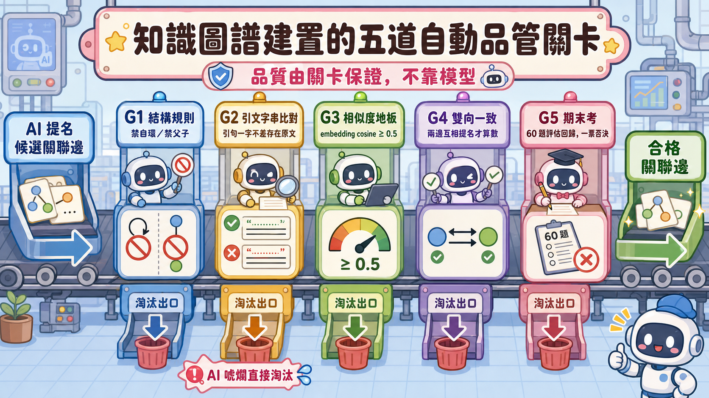
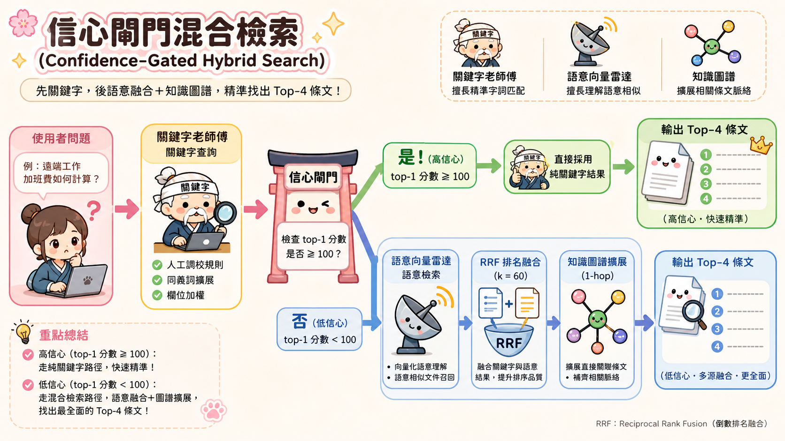

SDD：Hybrid Search（RRF）+ Knowledge Graph 1-hop 重建計畫
開發方法：SDD（本文件為權威規格）＋ TDD（每 Phase 測試先行）。執行者：Codex CLI 與 Antigravity CLI，規格與驗收由 Claude 擔任。本文件保留 v1.0 → v1.4 的完整決策軌跡——包括每一次改道、勘誤與標準修訂。
1. 背景與目標
README v3.9 宣稱的 Hybrid Search（RRF）+ KG 1-hop 實作與對應檔案（data/knowledge_graph.json、data/embeddings.npy、scripts/build_embeddings.py）實際不存在於程式碼庫。本計畫重建該能力，並新增「程式自動把關」的 KG 建置產線，全程使用地端模型（Ollama），不依賴雲端。
設計決策（已拍板，不再討論）
| 決策 | 結論 | 理由 |
|---|---|---|
| 提名模型 | 地端（gemma3:12b-16k + gemma4:e2b-mlx 雙提名器取聯集） | 未來機敏語料必須地端；品質由關卡保證，模型只影響產量；現在就用目標條件驗收架構 |
| KG 品質把關 | 五道程式關卡，零人工審核 | 引文字串比對等確定性驗證比 LLM 裁判可靠 |
| 融合演算法 | RRF（k=60），只比排名不比分數 | 免除跨檢索器分數正規化問題 |
| 離線性 | 建置期與執行期 100% 離線（localhost Ollama） | Strict Offline 是本專案核心約束 |
| 提名器優劣評估 | 產線關卡通過率＋黃金邊召回＋期末考，決策規則預先寫死 | 避免看到數字後憑感覺凹 |
2. 範圍
In Scope
- 向量索引建置腳本與索引檔
HybridSearcher：關鍵字＋向量 RRF 融合＋KG 1-hop 擴展＋離線退化- KG 五道關卡建置產線（雙地端提名器）
- 提名器評測腳本（含黃金邊召回）
- 檢索評估回歸（60 題）
Out of Scope
- 不修改
search_tool.py既有關鍵字邏輯（HybridSearcher 是包裝層） - 不修改 LV2/LV3 tools、Web UI、System Prompt
- 不做雲端模型稽核員（選配，另案）
- 不接入
app.py/main.py（整合為後續獨立變更，本案只交付可用元件＋評估證據）
3. 架構
144 節點] --> B[scripts/build_embeddings.py] B --> C[data/clause_embeddings.json] A --> D[scripts/build_knowledge_graph.py] D --> G1[關卡1 結構規則] G1 --> G2[關卡2 引文字串比對] G2 --> G3[關卡3 相似度地板] G3 --> G4[關卡4 雙向一致] G4 --> E[data/knowledge_graph.json] G4 --> R[建置報表：各關卡刷掉數] end subgraph 執行期["執行期（每次查詢，離線）"] Q[查詢] --> K[關鍵字排名
ISO27001Searcher] Q --> V[向量排名
cosine over 144] K --> F[RRF 融合 k=60] V --> F F --> H[KG 1-hop 擴展
鄰居分數 ×0.5] E -.-> H H --> O[top-k 結果] end subgraph 驗收["驗收（關卡5 期末考）"] O --> EV[eval/evaluation.py 60 題
Hit Rate / Recall / MRR 不退步] end
註：本圖為 v1.0 原始設計。v1.3 起執行期加入信心閘門（見 §10.3 任務 B），v1.2 起正式 KG 改由 pdca_graph 直建（見 §9.2）。
4. 交付物清單
| 檔案 | 類型 | 說明 |
|---|---|---|
src/iso27001_advisor/core/hybrid_search.py | 新增 | HybridSearcher 類別 |
src/iso27001_advisor/core/kg_gates.py | 新增 | 五道關卡的純函數（供產線與評測共用） |
scripts/build_embeddings.py | 新增 | 144 節點向量索引建置 |
scripts/build_knowledge_graph.py | 新增 | KG 建置產線（提名 → 關卡 → 輸出＋報表） |
scripts/eval_nominator.py | 新增 | 提名器 A/B 評測 |
data/clause_embeddings.json | 產物 | 向量索引（版控） |
data/knowledge_graph.json | 產物 | 過關邊集（版控） |
data/kg_gold_edges.json | 產物 | 黃金邊（v1.1 起改由 pdca_graph 抽取，見 §5.6） |
tests/test_rrf.py 等 6 個測試檔 | 新增 | 見 §7 TDD 計畫 |
5. 規格細節
5.1 向量索引 data/clause_embeddings.json
{
"embed_model": "jeffh/intfloat-multilingual-e5-large-instruct:f16",
"built_at": "ISO8601",
"source_file": "data/iso27001_structure.json",
"dimension": 1024,
"items": [{"id": "control_8.13", "embedding": [0.01, "..."]}]
}- 嵌入文本：
{subsection}\n{title}\n{content}（document 端不加 prefix，遵循 E5-instruct 規範，同semantic_cache.py） - 查詢端加
semantic_cache._QUERY_INSTRUCTION同款 instruct prefix - 排除父章節節點（id 不含小數點者，如
clause_5），與關鍵字端降權邏輯一致
5.2 HybridSearcher（core/hybrid_search.py）
HybridSearcher(searcher=None, emb_path=None, kg_path=None,
host="http://localhost:11434", rrf_k=60, kg_damp=0.5)
.search(query, limit=4) -> list[{"item": dict, "score": float, "source": str}]
.is_hybrid_ready -> bool行為規格：
- 關鍵字排名：委派
ISO27001Searcher.search(query, limit=20)（取寬再融合） - 向量排名：查詢 embedding → cosine 對全索引 → 取前 20
- RRF：
score(d) = Σ 1/(rrf_k + rank_i(d))，rank 從 1 起算，僅出現於該路者只累加該路 - KG 1-hop：融合後 top-limit 的每個節點，其 KG 鄰居以「該節點 RRF 分數 × kg_damp」併入；已在結果中者不重複、不加分；重排後截斷至 limit
- 離線退化：embedding 呼叫失敗／索引檔缺失 → 靜默退回純關鍵字結果（
source="keyword_fallback"），不得拋出例外；KG 檔缺失 → 跳過擴展 source欄位標記"rrf"/"kg_1hop"/"keyword_fallback"，供除錯與測試斷言
5.3 KG 邊格式 data/knowledge_graph.json
{
"built_at": "ISO8601",
"nominators": ["gemma3:12b-16k", "gemma4:e2b-mlx"],
"gates_version": 1,
"gate_report": {"nominated": 0, "g1_rejected": 0, "g2_rejected": 0,
"g3_rejected": 0, "g4_rejected": 0, "survived": 0},
"edges": [{
"from": "control_8.13", "to": "control_8.14",
"evidence_from": "原文引句", "evidence_to": "原文引句",
"similarity": 0.72,
"nominated_by": ["gemma3:12b-16k"],
"bidirectional": true
}]
}邊為無向：儲存時 from < to（字典序）正規化去重。
5.4 五道關卡（core/kg_gates.py，全部純函數）
| 關卡 | 函數簽名 | 規則 |
|---|---|---|
| G1 結構 | gate_structure(edge, id_index) | 無自環；兩端 id 存在；不得為父子章節（clause_5 vs clause_5.1）；圖層級套 degree cap ≤ 6（超過者保留 similarity 最高的 6 條） |
| G2 引文 | gate_evidence(edge, id_index) | evidence_from 去空白後為 from 節點 content/title 的子字串；evidence_to 同理；引句長度 ≥ 6 字 |
| G3 相似度 | gate_similarity(edge, emb_index, floor=0.5) | 兩端節點向量 cosine ≥ floor（重用向量索引，不另呼叫 embedding） |
| G4 雙向 | gate_bidirectional(edge, all_nominations) | A 問卷提名 B 且 B 問卷提名 A（任一提名器達成即可） |
| G5 期末考 | 非函數，為驗收程序 | 見 §6 驗收標準第 3 條 |

5.5 提名器協定【v1.1 修訂：候選清單提名法】
v1.0 的開放式提名（「這個節點的親戚有誰？」）經實跑證實：12B 模型單次呼叫 30 秒~3 分鐘，全量 774 次呼叫不可行，且開放式生成易提名不存在的 ID。v1.1 改為候選清單確認法：把生成任務降維成驗證任務。
- 候選預篩：對每個節點，以向量索引算 cosine，取 top-15 相似節點為候選清單（排除自己與父子章節）。純本地計算，零 LLM 成本。
- 提名 prompt：給模型該節點原文＋15 個候選（各附 id、標題、content 前 200 字），要求只從候選中挑出真正相關者並附兩端原文引句，JSON 輸出；無相關者輸出
{"related": []}。 - 效益：(a) 輸出短、呼叫快；(b) 模型不可能提名候選外的幻覺 ID（非候選 ID 直接丟棄並計入格式失敗）；(c) G4 雙向一致仍有效（cosine 對稱，互為候選通常成立）。
- 輪數：預設 N=2（
--rounds可調）；JSON parse 失敗記入「格式失敗數」，該輪跳過，不重試超過 1 次；雙提名器存活邊取聯集；--offline為預設且唯一模式。
建置作業規範（v1.1 新增）：按模型分批（避免 Ollama 反覆載卸 12B 模型）；全量建置背景執行＋checkpoint 續跑；正式全量前先 --sample 3 煙霧測試估總時長，超過 12 小時停下回報。
5.6 提名器評測 scripts/eval_nominator.py
- 抽樣
--sample 25個節點（固定 seed=42 保證可重現） - 輸出指標：格式合格率、引文誠實率（G2 通過÷提名總數）、存活邊產量、收斂輪數、黃金邊召回率
- 黃金邊【v1.1 修訂】：
data/cht.md實測無「其他資訊」交叉引用（抽取 0 條），改以pdca_graph.json的related欄位為來源——本專案既有的人工整理關聯（78 節點），品質受合規推薦系統長期使用驗證。next欄位（流程順序）不採用。
6. 驗收標準（全部可程式驗證）
python3 -m pytest -q全綠（既有 200＋新增測試，0 failed）- 離線退化：以不可達 host 建
HybridSearcher，search()回傳非空關鍵字結果且不拋例外 - 期末考（G5）：60 題重跑，指標相對 keyword-only 基準不退步；評估腳本支援模式開關以便對照
build_knowledge_graph.py輸出 gate_report，每條存活邊通過全部關卡（獨立驗證函數複核）eval_nominator.py產出完整指標表與 JSON 結果檔- 全流程無任何非 localhost 網路呼叫
7. TDD 實作計畫（每 Phase 紅 → 綠 → 驗證）
鐵律：先寫測試看它失敗（紅），再實作到通過（綠），每 Phase 結束跑全套 pytest 確認無回歸，才進下一 Phase。
| Phase | 先寫的測試 | 再寫的實作 |
|---|---|---|
| 0 基準 | — | 確認環境（ollama list 有提名模型與 e5）；記錄既有測試數 |
| 1 RRF 純函數 | test_rrf.py：雙排名融合、單路獨佔、空輸入、k 參數 | rrf_fuse() 純函數 |
| 2 向量索引 | test_embedding_index.py：schema、維度、父章節排除、缺檔 | build_embeddings.py＋索引載入器 |
| 3 KG 關卡 | test_kg_gates.py：每關通過/拒絕案例各 ≥ 2 | kg_gates.py |
| 4 產線組裝 | test_kg_pipeline.py：mock 提名器走完整產線 | build_knowledge_graph.py（提名器可注入） |
| 5 HybridSearcher | test_hybrid_search.py：RRF 整合、KG 打折、離線退化 | HybridSearcher 完成 |
| 6 提名器評測 | test_nominator_eval.py：指標純函數、mock 資料 | eval_nominator.py＋黃金邊抽取 |
| 7 實跑建置 | — | 建索引 → 建 KG（真 Ollama）→ 評測報表 |
| 8 期末考 G5 | 評估腳本模式開關（含小測試） | keyword vs hybrid 對照 |
8. 風險與緩解
| 風險 | 緩解 | 實際結果 |
|---|---|---|
| 12B 模型 JSON 格式不穩 | 格式失敗計數＋單次重試；評測指標暴露嚴重度 | ✅ 應驗（§9.1），另抓到 parser 冤案 |
RRF 稀釋 _INTENT_BOOSTS 精準命中 | G5 期末考一票否決 | ✅ 應驗（§10.1），催生信心閘門 |
| 建置耗時 | checkpoint 可中斷續跑 | ✅ 候選清單法將單次呼叫壓至 18 秒 |
| 黃金邊抽取不到官方交叉引用 | 允許種子邊替代 | ✅ 應驗，改用 pdca_graph（§5.6） |
9. v1.2 修訂：正式評測結果與 Phase 7 改道
9.1 正式提名器評測（--sample 25，每模型 100 次呼叫）
| 模型 | 格式合格率 | 引文誠實率 | 存活產量 | 黃金邊召回 | 判定 |
|---|---|---|---|---|---|
| gemma3:12b-16k | 92.0% | 12.73% | 1 | 0.79% | 格式過關，但觸發誠實率 < 50% 重新設計條件 |
| gemma4:e2b-mlx | 48.0% | 4.0% | 0 | 0% | 淘汰（預註冊規則 ①） |
失敗型態分析：gemma3 的 G2 失敗主因為改寫、省略號、self/other 引句對調——12B 模型「一字不差複製長句」本身不可靠，屬能力邊界而非 prompt 可修。
gemma4:e2b-mlx（effective-2B 級小模型）。上表淘汰判決僅對 e2b-mlx 成立，gemma4:12b-it-qat(-16k) 從未受測。此錯誤不影響 §9.2 改道決策（觸發點為 gemma3:12b 自身的誠實率），但影響 §9.3 重啟名單。
9.2 決策：LLM 提名產線暫停，KG 改由 pdca_graph 直建
pdca_graph.json的related欄位為人工整理、經合規推薦系統長期使用驗證的關聯邊（127 條）。G2/G4 的設計目的是「驗證 LLM 有無唬爛」，對人工邊為範疇錯誤，不適用。- Phase 7 改為：
--from-pdca直建——展開邊對、from < to去重、兩端存在性檢查、套 G1＋degree cap ≤ 6、source標"pdca_graph"。G2/G3/G4 跳過，報表附相似度分布（僅供參考）。 - Phase 8 照舊：pdca-KG 接上 HybridSearcher 跑 60 題期末考。
9.3 LLM 提名產線封存狀態與重啟條件
- 產線程式碼與測試保留（G1-G4、候選清單法、checkpoint、評測器），不刪除。
- 重啟條件：期末考證明 KG 1-hop 有正貢獻，且需要 pdca 未覆蓋的邊（pdca 覆蓋 78/129 節點）。
- 重啟候選提名器：
gemma4:12b-it-qat-16k（同量級對決的正確人選）。 - 重啟必要重新設計：evidence 由「自由引句」改為句子編號選擇法——候選內容以編號句子呈現，模型回傳句子索引，程式驗證索引存在。把「抄寫誠實」問題轉為「選擇有效」問題。
- 選配診斷結果（gemma4:12b-it-qat-16k，--sample 25）：格式合格率 84%、引文誠實率 66.67%——顯著優於 gemma3 的 12.73%，證實個體差異存在，但仍有 ID 錯配與欄位對調，句子編號選擇法維持為重啟必要條件。
10. v1.3 修訂：期末考退步、消融實驗與信心閘門
10.1 期末考結果（60 題，KG=pdca 125 邊）
| 指標 | keyword-only | hybrid（RRF+KG） | 差異 | 判定 |
|---|---|---|---|---|
| Hit Rate@4 | 100.0% | 96.7% | -3.3% | ❌ 一票否決 |
| Avg Recall@4 | 79.7% | 79.0% | -0.7% | ❌ |
| Avg Precision@4 | 37.1% | 35.4% | -1.7% | ❌ |
| MRR@4 | 0.8597 | 0.8917 | +0.032 | ✅ 排序品質提升 |
退步題：q52（外部認證稽核）、q56（新 SaaS 導入）。根因：關鍵字規則照本評估集調校（基準滿分＝天花板），RRF 等權融合稀釋人工規則的精準命中——§8 風險表第 2 項應驗，G5 正確擋下。
eval_results.json 本輪被覆寫且無 git 歷史可對證——此事直接促成專案 git init。10.2 認知修正：本評估集對 hybrid 天生不公平
基準已滿分，任何融合在此集上的天花板是平手；但 MRR +0.032 顯示向量在命中題內改善排序。正確問題不是「hybrid 好不好」，而是「何時該讓向量說話」。
10.3 後續任務與信心閘門定案
任務 A 消融實驗：四組對照隔離退步來源。任務 B 信心閘門【任務 A 後定案】：閘門罩住整個增強層（向量 RRF＋KG 擴展，全有或全無）——
- 關鍵字 top-1 分數 ≥ 100（boost/intent 觸發的最小加分值，先驗固定，禁止調整）→ 高信心，回傳純 keyword 結果
- < 100 → 低信心，走完整 full（RRF＋KG）

任務 C 改寫題評估集：地端模型改寫 60 題問句（標準答案不變、禁止照抄原題連續 ≥ 6 字，程式驗證）。任務 D 雙軌期末考：原題不退步＋改寫題有提升，兩者皆達成才合併。
10.4 任務 A 消融實驗結果（commit 5bed1cc）
| 模式 | Hit Rate@4 | Recall@4 | Precision@4 | MRR@4 |
|---|---|---|---|---|
| keyword | 100.0% | 79.7% | 37.1% | 0.8597 |
| keyword+KG | 98.3%（q51 ❌） | 80.9% | 37.5% | 0.8556 |
| keyword+RRF | 96.7%（q52/q56 ❌） | 79.0% | 35.4% | 0.8917 |
| full（RRF+KG） | 96.7%（q52/q56 ❌） | 79.0% | 35.4% | 0.8917 |
- q52/q56 退步唯一根源為 RRF 等權融合稀釋 intent boost
- q51 僅在 keyword+KG 失敗（KG 鄰居以折扣分擠掉吊車尾正解）；於 full 模式被向量重排救回 → KG 不應單獨疊加，應與 RRF 同進退
- 勘誤：本節原始報告稱 q52 top-1 score=180.0，任務 B 實測為 88.6（無任何規則觸發）。教訓：代理回報的關鍵數字須驗算後才可作為推理前提。
10.5 任務 B 結果（commit 5052f3e）：預測未中，根因為 §10.4 錯誤數據
| 模式 | Hit Rate@4 | Recall@4 | Precision@4 | MRR@4 |
|---|---|---|---|---|
| keyword | 100.0% | 79.7% | 37.1% | 0.8597 |
| gated | 98.3%（q52 ❌） | 80.2% | 37.5% | 0.8764 |
| full | 96.7% | 79.0% | 35.4% | 0.8917 |
- 高信心 57 題全數命中；低信心 3 題（q43/q51/q52）戰績 2 勝 1 敗——q43 MRR 0.5→1.0、q51 MRR 0.25→1.0，q52 Recall 33%→0%（敗者原為無規則保護的邊緣險勝）
- q52 判讀：閘門分類正確，其退步是低信心分支的固有代價，非可修的 bug
- 決策：不調門檻（禁止看答案改考卷）、不動題目；最終合併判定升級為專案擁有者的記錄性取捨
10.6 任務 C/D 結果與最終判定（commit 92be941）
任務 C：56/60 題成功改寫（gemma4:12b-it-qat-16k，4 題 skipped 保留原題）。任務 D 雙軌期末考：
| 考場 | 模式 | Hit Rate@4 | Recall@4 | Precision@4 | MRR@4 |
|---|---|---|---|---|---|
| 原 60 題 | keyword | 100.0% | 79.7% | 37.1% | 0.8597 |
| 原 60 題 | gated | 98.3%（q52） | 80.2% | 37.5% | 0.8764 |
| 改寫 60 題 | keyword | 71.7% | 54.2% | 22.9% | 0.5931 |
| 改寫 60 題 | gated | 76.7%（+5.0） | 58.1%（+3.9） | 24.6%（+1.7） | 0.6222（+0.029） |
- 過擬合實測定量：關鍵字規則離開考古題考場即從 100% 跌至 71.7%（-28.3pp）
- gated 於改寫考場四指標全面提升，救回 q26/q39/q52——原題考場丟失的 q52，其改寫版被 gated 救回（對稱性證據）
- 低信心題 3 → 9（boost 字眼被改寫掉），驗證閘門分流預測
- gated 於改寫考場仍 14 題失敗（12 題與 keyword 共同失敗）——向量抬升天花板而非奇蹟，增益誠實
11. v4.2 收尾完成記錄（2026-07-04）
11.1 收尾執行結果
| 任務 | 結果 | commit |
|---|---|---|
| gated 設為預設 | HybridSearcher.search() 預設 gated；既有測試改顯式 mode="full" | 8c46007 |
| 雙資料集回歸護欄 | test_gated_recall_regression.py：探測式 skip（實測 Ollama 可達性再決定，不吞真 bug） | 9bd1fef |
| 護欄捨入修復 | 見 §11.2 | 5449a60 |
| README 更新 | 雙軌指標表、過期數字作廢、目錄實檔化 | 73fbe70 |
| spec HTML 全面同步 | system_spec.html → Spec v1.6、architecture.html 加閘門節點、歷史計畫加歸檔橫幅 | 54bf9dc |
11.2 收尾階段的最後一個 bug：護欄捨入邊界
Codex sandbox 擋 localhost，護欄測試在其環境只能 skip、從未跑綠。真環境首跑即紅：改寫題實測 46/60 = 76.666...%，門檻卻寫成報表四捨五入後的 76.7%——76.666 ≥ 76.7 永久失敗，護欄天生是壞的。修法：百分比比較改為整數命中數比較（hit_count >= 46、>= 59），捨入問題從根本消除。
教訓：(1) sandbox 中 skip 的測試不算驗證過，護欄類測試必須在依賴可達的環境至少跑綠一次；(2) 邊界值永遠不用「顯示用的捨入值」——報表寫 76.7% 是給人看的，程式比較要用真實值（46/60）。
11.3 全程回顧：八次轉折的決策軌跡
每個轉折都由數據觸發、每次標準修訂都有白紙黑字。本文件連同 git 歷史（f292082 起）構成完整的 Evaluation Flywheel 實踐記錄。
11.4 遺留事項
- v4.3：
app.py/main.py/agent.py接線至 HybridSearcher（gated） - LLM 提名產線重啟（選配）：gemma4:12b-it-qat-16k＋句子編號選擇法（§9.3），目標為 pdca 未覆蓋的 51 節點
- 改寫考場天花板 76.7%：gated 仍有 14 題失敗（12 題與 keyword 共同失敗），候選方向：同義詞擴充、KG 補邊、embedding 模型升級